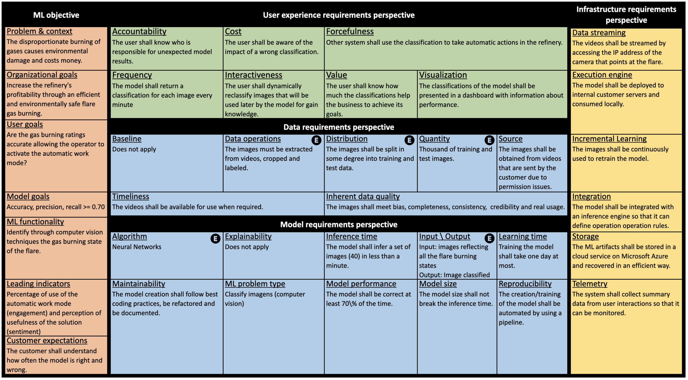

Machine learning (ML) teams often work on a project just to realize the performance of the model is not good enough. The success of these systems involve aligning data with business problems, translating them into ML tasks, experimenting with algorithms, evaluating models, capturing data from users, among others. Literature has shown that ML-enabled systems are rarely built based on precise specifications for such concerns, leading ML teams to become misaligned due to incorrect assumptions, which may affect the quality of such systems and overall project success. In order to help addressing this issue, we propose and evaluate a perspective-based approach for specifying ML-enabled systems. The approach involves analyzing a validated set of ML concerns grouped into five perspectives: objectives, user experience (UX), infrastructure, model, and data. We report a case study applying our specification approach retroactively to two industrial ML projects and validating the specifications and gathering feedback from six highly experienced software professionals involved in these projects. The case study indicates that the approach can be useful in practice, particularly helping to reveal important requirements that would have been missed without using the approach. Hence, it can help requirements engineers to specify ML-enabled systems by providing an overview of validated perspectives and concerns that should be analyzed together with business owners, data scientists, software engineers, and designers.
Here, we detail the Project B involved in our evaluation and present how the ML perspective-based task and concern diagram can support requirements engineers and stakeholders to fill out the ML Requirements Specification Template.
Project B is a computer vision system that helps refineries to decrease the disproportionate burning of gases that causes environmental damage and costs money. In the following, we present …
Any question/suggestion please contact the authors of this work.
| # | Name | |
|---|---|---|
| 1 | Hugo Villamizar | hvillamizar@inf.puc-rio.br |
| 2 | Marcos Kalinowski | kalinowski@inf.puc-rio.br |
| 3 | Helio Lopes | lopes@inf.puc-rio.br |